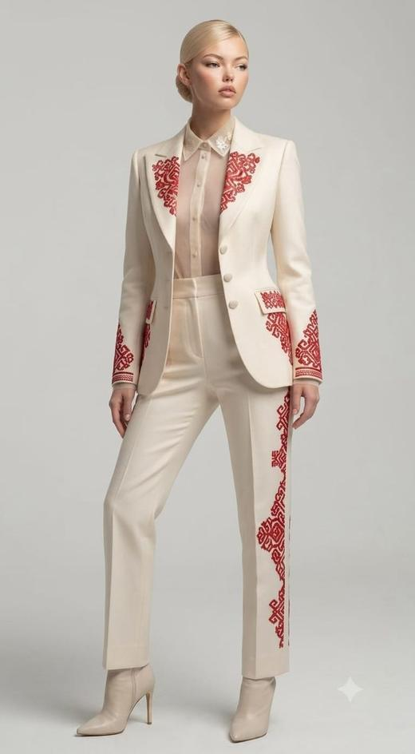
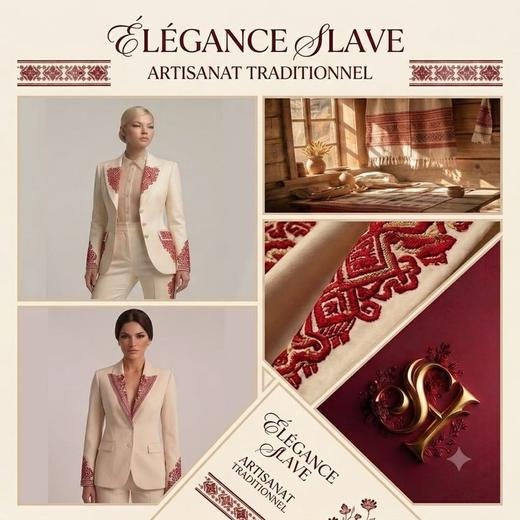
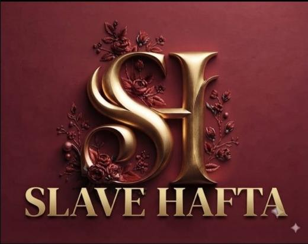
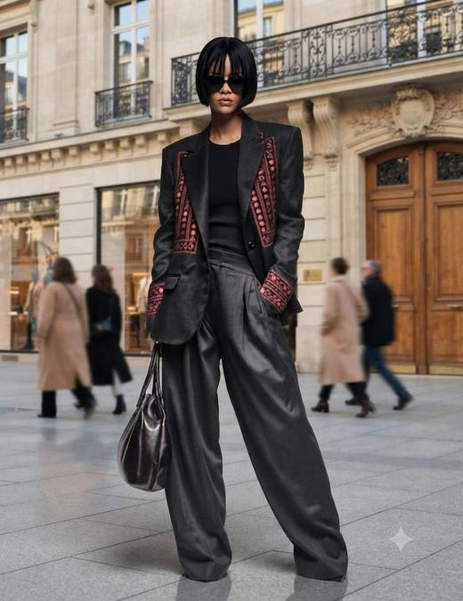
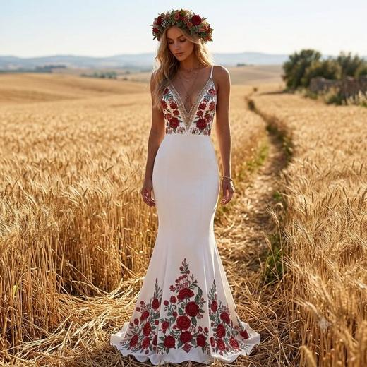
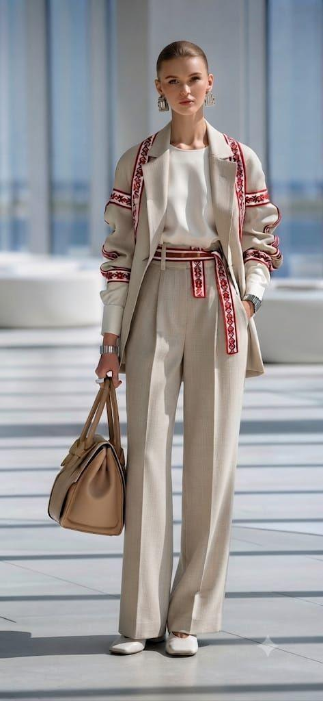
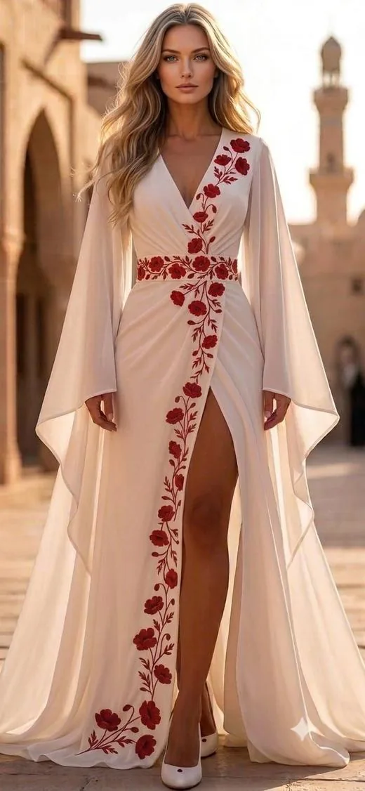
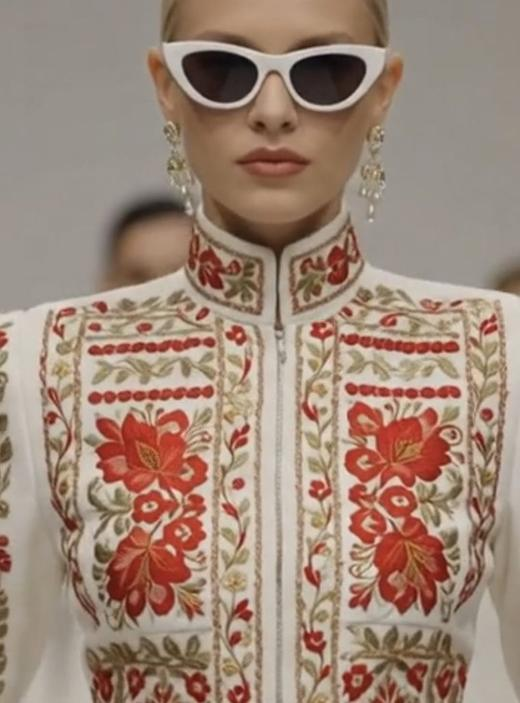

Personal brand
SLAVE HAFTA
My fashion brand inspired by Slavic embroidery: hand-coded site, AI-made visuals and social media.

Project details
The project
My own fashion brand, with a “dark feminine” aesthetic, inspired by Slavic embroidery and reinterpreted for the modern woman. Burgundy and gold palette.
The brand is in pre-launch: the goal is to test public interest and build a waiting list before opening pre-orders. Target: women aged 20 to 40.
My role
I created everything myself, from A to Z:
- Brand identity: SH monogram logo, palette, tone
- Site hand-coded in HTML/CSS, fully redesigned in October 2026: 13 pages, 9 categories, filterable collection, pre-order cart, “Our story” page, mobile menu
- Product photos cut out and harmonised on a cream background across the whole collection
- Photos and videos I created with generative AI
- SEO: audit then fixes (meta tags, Open Graph, structured data, sitemap) and Google Analytics tracking
- Accounts on Instagram, Pinterest and TikTok, with a 3-month editorial calendar (awareness, engagement, conversion)
- Business plan and project management
Tools
- HTML / CSS, GitHub Pages
- Generative AI (images) and Google Flow (videos)
- Google Analytics 4
- Instagram, Pinterest, TikTok
- Notion, NocoDB
My social media posts
Visuals I created with generative AI and posted on Instagram, Pinterest and TikTok : logo, moodboard and looks from the collection.







